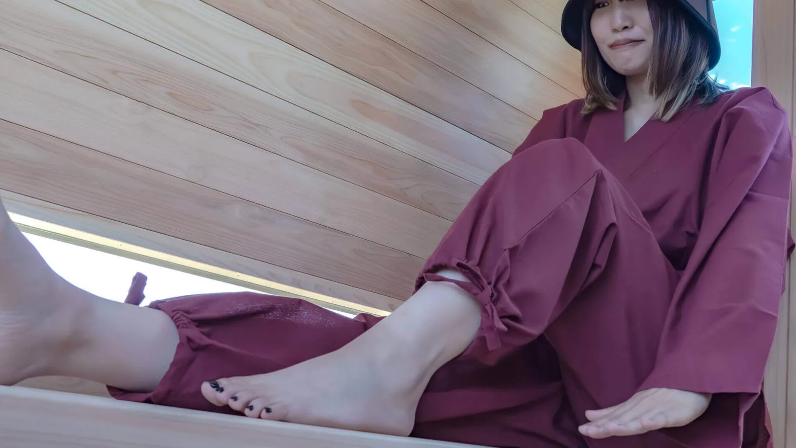
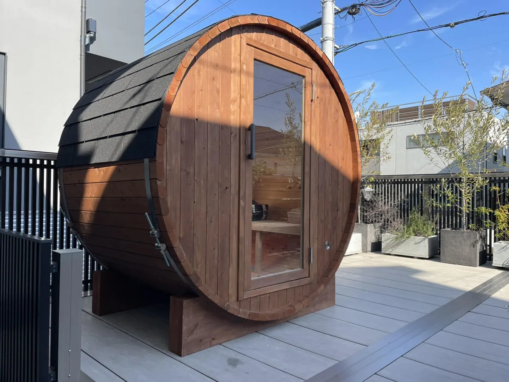

自宅でサウナを楽しむことは、日々の疲れを解消し、家族や友人との絆を深めるおすすめの方法です。家庭用サウナ購入時に主な選択肢は屋内サウナ、アウトドアサウナ（バレルサウナ）、テントサウナがあり、サイズや材質、耐久性、コストなどを考慮して選ぶことが重要です。
家庭用サウナがおすすめ！自宅でサウナを楽しむ魅力とは？

自宅でサウナを楽しむことは、日々のストレスから解放され、心身共にリラックスするための素晴らしい方法です。こちらでは家庭用サウナの魅力と、購入前に知っておきたいポイントについて詳しく解説していきます。
自宅で体験するリラックス効果
自宅でサウナを楽しむ最大の魅力は、日々の忙しさから解放され、いつでもリラクゼーションの時間を心地よい環境で過ごせることです。快適な自宅の敷地内に自分好みのプライベートサウナを設置することで、疲れた体を温め、心を落ち着けることが可能になります。サウナに入ることによりストレス解消やリラックス効果が期待でき、健康維持にも貢献します。自宅で時間などを気にせず気軽に利用できるため、普段の生活においても継続的なリラクゼーションが可能となり、生活のクオリティを向上させます。
家族や友人との時間を豊かにする
自宅にサウナを設置する魅力の一つは、家族や友人と共に特別な「ととのい時間」を過ごせることです。忙しい日々の中で一緒にサウナに入ることは、コミュニケーションの質を高め、お互いの絆を深める絶好の機会となります。また、サウナのある家は、友人を招待する際の魅力的な集まりの場所ともなり得ます。一緒に汗を流し、リフレッシュすることで、心身共にリラックスできる時間を提供します。これらの時間は、日常生活においても貴重で贅沢なひと時となるでしょう。
家庭用サウナの種類と選び方

家庭用サウナの種類
家庭用サウナを購入する際、選択肢は大きく3つに分かれます。屋内サウナ、アウトドアサウナ（バレルサウナ）、そしてテントサウナです。
| サウナの種類 | 特徴 |
|---|---|
| 屋内サウナ | 家の中に設置し、天候や季節を問わず利用可能。プライベート性が高い。 |
| アウトドアサウナ（バレルサウナ） | 庭や広い屋外、屋上やテラスなどのスペースに設置。自宅周囲の自然や風景を鑑賞しながら本格的なフィンランド式サウナが楽しめる。 |
| テントサウナ | 設置が容易で移動が可能。場所を問わずサウナを楽しめる。 |
屋内サウナは、天候に左右されることなく一年中快適に使用できるため、安定してサウナを楽しみたい方におすすめです。設置場所は部屋内の一角となるケースが大半で、自分だけのととのう空間として適しています。
一方、アウトドアサウナ（バレルサウナ）は、広々とした屋外スペースで自然や風景などを眺めながらサウナを楽しむことができます。多くのメーカーの製品が丈夫な木材から作られているため、長期間の使用が可能です。また、定期的なメンテナンスを行うことでより耐久年数を伸ばすことが可能です。
テントサウナは、比較的低価格で簡単に始められるため、サウナ初心者に適しています。ただ、外部の天気や気候に影響されやすいため、安全面では他のサウナよりやや欠けています。
選び方のポイント
家庭用サウナを選ぶ際には、収容サイズ、材質、製造工程、耐久性、コストが重要なポイントです。サイズについては、設置するスペースの大きさに合わせて選びます。また、材質はサウナの見た目や機能性に影響し、質の高い木材を選ぶことでより長期間の使用が見込めます。耐久性に関しては、高品質な素材と加工技術が重要で、保守パックなどのアフターサービスの展開もチェックポイントです。コストは購入価格だけでなく、設置費用、ランニングコストやメンテナンス費用なども考慮して総合的に評価します。
使用場所に合わせた選び方
家庭用サウナを選ぶ際、使用場所は大きな決定要素となります。具体的には、自宅の屋内に設置するか、あるいは屋外に設置するかを選ぶ必要があります。それぞれに合ったサウナの種類が存在し、以下の選択肢があります。
| 使用場所 | 選択肢 |
|---|---|
| 屋内 | ボックス型サウナルーム、ドーム型サウナ |
| 屋外 | バレルサウナ、テントサウナ |
屋内に設置する場合、スペースの制約や換気の問題を重視して選びます。一方、屋外に設置する場合は耐候性やメンテナンスのしやすさが重要なポイントとなります。どちらの場合も、利用頻度や希望に合ったデザイン、サウナ体験で選ぶことが大切です。
自宅にサウナを設置することで、忙しい生活の中でも時間を気にせず、自分のペースで本格的なサウナを楽しむことができます。また、家族や友人と共に過ごす時間をより豊かで特別なものに変えることが可能です。家庭用サウナを選ぶ際は、サイズや材質、耐久性、コストといった選び方のポイントを踏まえたうえで、ご自身の使用目的に合ったサウナを選びましょう。
Rink SAUNAは、高品質な国産ヒノキ材を使用したバレルサウナをご提供しています。2～8名で使用できる様々なラインナップをご用意していますので、ご家族や友人など、使用人数に合わせたサウナを選べます。木材の安定調達と国内製造により、お届けまでの納期が早く、本格的なバレルサウナをお楽しみいただけます。また、保守パックプランなどもございますので、導入後も安心のアフターサポートを提供します。